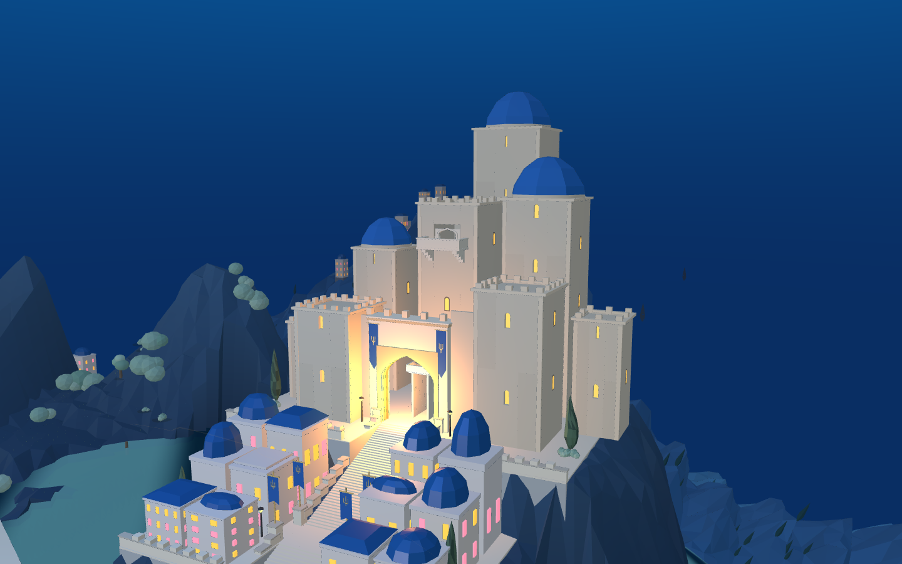

已接入 8931 原游戏，并同步 Godot 工程。这是实际运行截图，不是目标概念图。
七座塔楼、57 个墙模块、19 个真实窗洞。使用原 WFC 求解器约束边角实墙、窗列对齐及窗型；目标体量、侧墙和中央旋梯塔仍为定制装配，不能算整城 WFC 已完成。


相同城池局部坐标观察方向；Godot 实际视口宽高比不同，不作为像素一一对应比较。两端的布光和主堡整体目标差距仍待收敛。
100 组求解检查通过；窗内射线命中后退 0.39 米的窗片而非实墙；Web 3370 个路线采样通过。Godot 携装短剑兵完成 760 段路线，障碍控制组能拦停。未据此声称整场战役或最终步态完成。